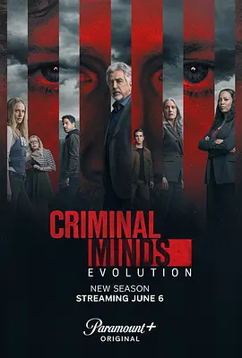

7.3
犯罪心理：演变 第十七季
Criminal Minds: Evolution Season 17
2024
美国
评分 7.3
导演:
道格拉斯·阿尔尼奥科斯基 / A·J·库克 / 亚当·罗德里格兹 / 乔·曼特纳 / 沙拉特·拉朱
演员:
乔·曼特纳 / 帕姬·布鲁斯特 / 亚当·罗德里格兹 / A·J·库克 / 克斯汀·范奈丝 / 丹尼尔·亨利 / 瑞安-詹姆斯·哈坦
类型:
剧情,悬疑,犯罪
剧情简介
第十七季延续上一季的暗线，将 BAU 再次推入一场充满欺瞒、操控与高度心理战的巨大漩涡。故事从对“金星”组织的持续调查展开，这个诡秘的网络逐渐显露出比想象中更深、更复杂的结构。它的成员遍布不同社群、行业甚至执法系统内部，每一条线索都像通往更深层的迷雾，使团队在最初阶段就陷入极端被动。与此同时，臭名昭著的连环杀手 Elias Voit 被“谈判”转移至 BAU 管辖的联邦拘留设施，这一决定在队内引发强烈震荡。Voit 的到来形同在团队后院埋下一颗不定时炸弹，他清楚了解 BAU 的工作方式，也十分擅长操控对话、挑拨情绪。罗西在审讯室里与 Voit 的对峙尤为紧张，他在试图挖出“金星”秘密的过程中几度被迫直面自身的恐惧与愤怒；普莱提斯则必须在道德与效率之间维持艰难的平衡，既要利用 Voit 的情报，又要确保团队不被他牵着走。Alvez 与 Simmons 在战术层面承担更重任务，从查缉金星组织外围成员到处理多地点同步行动，他们在高速推进中展现出极高的默契。JJ 的沟通与判断成为团队在混乱中的锚点，她在面对受害者家属与地方执法部门时的稳健，让多起崩盘边缘的局面得以稳住。加西亚则继续以情绪与技术双重支撑团队，她在庞大的网络数据中筛取蛛丝马迹，也在最黑暗的阶段让队友保持人性温度。随着金星内部结构不断浮现，BAU 逐渐意识到自己面对的不是一个单独的杀手，也不是一群松散的模仿犯，而是一套经过精密设计、目标明确、分工明确的长期虐杀系统。越逼近真相，危险越呈指数级上涨——失踪人员名单扩大、潜伏者的行动加速，甚至连队内的心理状态都开始出现微妙裂缝。最终季的剧情以更压迫的节奏展示 BAU 在内外夹击下的挣扎。他们在巨大的系统性威胁面前几乎无路可退，却依旧试图守住“阻止下一名受害者”这条最朴素却最沉重的誓言。每一个判断、每一次行动都牵连着难以挽回的后果，而队员们也不得不在深渊边缘反复确认：他们是否还能承受下一次的黑暗冲击。